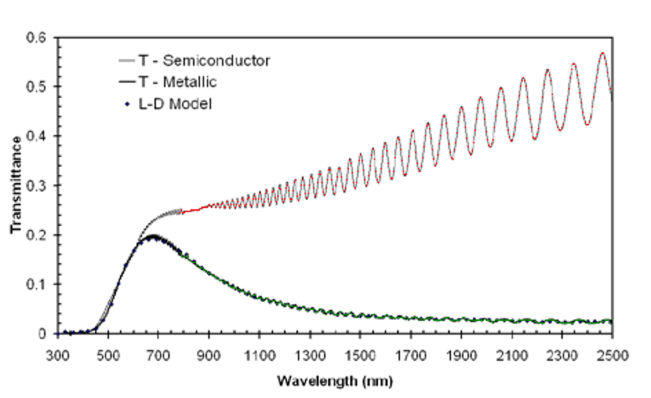
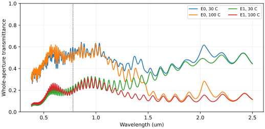
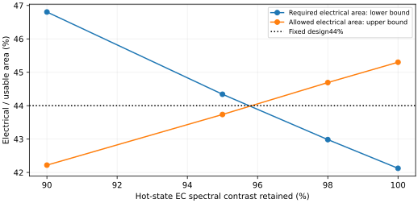

2026-11-06 · 仅推进题二 · 原结果与否定证据均保留
把材料与合成依据加回来后，哪些方案仍值得继续
目前仍没有可认证的简单加工达标器件。这轮推进了实际样品光谱、离子来源、工序兼容性和数值验证。旧33.45/22.23pp是预算，不再作为直接制造推荐。新候选改用连续溅射膜类参照、整百纳米电极和前置保护；可保留条件主幅，但真实云母/VO₂复谱、电控化学端点、两温共同电压和薄基底加工仍未闭合。严格折射率A已知失败；标称B也未获整机认证。
本次独立核对：算术成立，器件与加工条件仍未成立
另写法向特征矩阵程序，不调用原光学核，重建最终受保护候选的全部光学层与四端点组合。20份输入SHA一致；4405点整孔径T与原结果最大差1.67e-15，选定波长R/T对第三方tmm最大差1.33e-15。31.6679/20.8901pp及16个指定几何情景逐值复现；直接由四态不等式求解的线性规划也重现共同面积区间。这仅确认指定模型计算一致。
实际图的原生取谱覆盖781.592–2489.055nm，缺少的两端共12.537nm。允许这两段每一态T任取0–1，连同原纵向像素诊断得到29.02–33.28pp；旧45%温控面积贡献上界仅14.68pp，故旧分区不足的判断在此更保守诊断下不变。该范围仍不含横轴标定和取线规则歧义，不能称实验置信区间，也不转移为新候选成绩。
先保留怎样的具体结构
仍采用单片薄云母上的毫米级分区，不恢复液晶、光栅或外筛。设计孔径2×2mm，40µm隔离条；可用面积电控44%、温控56%。ITO电极本身延伸到孔径外接点，避免孔径内新增金属；若以后保留金属引线、底层或胶膜，必须另计材料和约束。
已列光学孔径构造最大截面7层，温控截面4层，保守计9个保留实体；载架、引线和边封未闭合前，不称完整器件实体数已定。两段Al₂O₃光学上暂用同一复谱，若两次沉积密度不同，必须分开替换输入。一次400nm公共盖层的8实体方案保留为对照；它不能保护VO₂免受之前EC沉积影响，因此不能只凭工序少就优先。
把加工流程变得直接，但不隐藏合成难点
区域和接点采用毫米窗口及40µm以上分隔，不要求1.5µm多方向配向或纳米刻蚀。靶材仍需V、ITO、W、含Li导体、LiNiO和Al₂O₃；若使用共溅射导体则还增加靶位/功率配比要求。这里比较的是小面积实验室制程，不追加量产或先制样验收。
实物证据带来的三个修正
其一，VO₂不能只按名称迁移。Wan原文的Film4存在域间裂纹和连续性不足，5mm电极间未见正常电阻突变；其光学拟合不作废，但它不支撑“直接做成云母连续膜”。本轮转用同文连续溅射Film1作为材料类参照；源基底仍为Si，迁移问题缩小而未消失。
其二，已制成的VO₂/云母样品确实可能不够。对Gentle等120nm VO₂/云母的实际NIR图逐像素取谱，780–2500nm平均相差约31.45pp，像素扰动诊断约30.05–32.87pp。按旧45%温控面积贡献仅13.87pp；即便无其他串扰也不达20pp。该样品的云母厚度及图中精确端温未给出，不能称它就是新70nm/加盖层/30–100°C器件。图谱只作为真实样品反例与材料目标依据，不反演成唯一n/k。

红/绿点覆盖原图两条曲线，仅取已分离的NIR部分；图源Gentle等，Figure2。误差诊断来自像素操作，不是原实验置信区间。
其三，LiNiO与普通NiO不能偷换。LBNL链接原始文件给出WO₃68.2、LiNiO219 mC·cm⁻²·µm⁻¹，解除了HTML把µm误写成mm的单位歧义。480/150nm的名义容量为32.736/32.85mC·cm⁻²；这仅是对应化学端点的预算。另一实际溅射工艺测得500nm WO₃/400nm NiO容量为127/45C·m⁻²，若按其容量密度线性迁移，150nm普通NiO仅够480nm WO₃的13.8%。按该比值加厚会变为约1084nm，条件模型VIS掉到24.23pp。这个对照不识别本器件真实容量，但足以否定“有NiO溅射先例，所以150nm LiNiO可直接用”的推断。
电控合成路线怎样选
优先核查室温单靶含Li导体与预含Li反电极组合，避免额外金属锂层及液体灌装。2019年已有LiₓNiOᵧ/LiTaO₃/WO₃全固态器件的室温磁控溅射先例，但本轮未取得其完整参数/全谱，不把它当成本构造的同工艺输入。
更早的LBNL LiNiO单靶RF论文证明了材料可沉积，却也保留了重要负证：实际器件用了125µm含液体分隔膜，且活化未消除。因此它不能证明满足本题≤10µm层厚的全固态器件已经闭合。2025共溅射路线则有完整室温固态器件，但顶电极为IGTO，不能用ITO替名；其55.11%/64.72%是不同633nm测试，不是已知VIS带均，EC光谱也仅到1900nm。两条完整制程线尚无本构造两温共同电压与2500nm覆盖，仍需保留缺口。
这轮实际完成了哪些验证

透明/着色是源化学端点，不是已证共同外加电压；VO₂端温30/100°C，不是25/50°C。
新候选NIR电交叉带差11.66pp，VIS温交叉带差1.38pp；采样谱峰分别36.65/4.83pp。原未给串扰阈值，因此不称严格解耦，也不擅加数值门槛。
最关键的联合验证：不能分别挑选两温电控状态
若热态电控对比只保留η，着色态EC在NIR的漂移会与VO₂温调相抵消。对可用电控面积f、间隔g，必须同时检查VIS端点差与NIR温差，而不只给EC幅度乘一个系数后保持NIR温幅不变。下表在同一16个几何情景上求共同面积开区间，保留这一抵消项；η是诊断参数，不是实测温依。

下界高于上界时，单靠调面积也无法补救该组固定材料与厚度。否定范围不扩大为原题无解。
仅在透明态固定、热态着色透射朝透明态缩小的指定模型中，2%对比下降仍保留共同面积；5%时共同区间消失。它不是任意2%材料或热漂移的容许保证。这说明当前材料状态/温依证据比继续微调层厚更重要。不能只报告16/16几何情景通过而隐藏联合热态失败。
下一步的三个可判别条件
- 优先取得同制程VO₂/薄云母/真实盖层的全谱。44/56面积分配要求局部NIR温主幅>36.44pp；当前模型约38.06pp，已找到实际裸膜样品仅31.45pp。若真实盖层结构不足，先改热膜/匹配层或放弃该组合，不增加不必要的微结构。
- 落实LiNiO的真实容量、活化与两温驱动。以完整全固态LixNiOy制程为主，不能只用液态半电池或普通NiO证明。需同一对电压对应的四态谱/可逆电荷，单点633nm和不同样品端点均不足。支撑≤10µm与所有保留封装层同步核查。
- 验证前置保护后EC沉积不会改变VO₂。核查前后相组成/复谱或有对应制程公开依据；前置20nm与后置380nm的应力、孔径外载持、接触掩膜和边界覆盖进入最终模型。若必须引入复杂释放/多片封装，则失去本路线的加工优势。
仍以仿真为原题验证；可以用已有可信公开完整数据闭合，不新增必须先真实制样的验收。严格A由ITO等实际谱越界已知失败；550nm30°C标称B尚缺真实支持/导体及同制程数据。原始厚度、特征和层数约束均保持。
主要依据与复算
关键原件和下载状态保留本地：云母M1相溅射、室温全固态EC及退化、LiₓNiOᵧ全固态工艺、2025共溅射实物器件、LiNiO合成与凝胶器件边界、VO₂跨样品光谱、电致变色原始谱。取得全文、只有摘要、补充材料拒绝访问分别记录，不填造缺失参数。
计算与条件JSON四态全谱CSV全部光学输入与便携复算包
python -X utf8 verify.py重积分四态和实际样品取谱；python -X utf8 recompute.py重算条件光学、混合相干、所有敏感性与16情景；python -X utf8 independent_audit.py用独立特征矩阵与线性规划核对最终构造、面积区间和A越界（Python3、NumPy2、SciPy、tmm0.2.0）。物理结果可复算不等于制造、共同电压或材料迁移已经验证。新run05保留前置/终盖层两个实体；run01–04作为方法和工序对照保留。